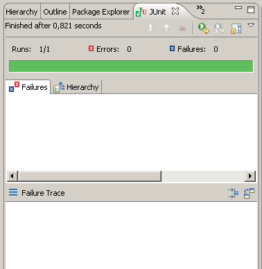

<html>
 <head>
  <title>ExTeX: Test Driver/title>
  <meta name="copyright" content="
   Copyright (C) 2005 The ExTeX Group and individual authors listed below

   This library is free software; you can redistribute it and/or modify it
   under the terms of the GNU Lesser General Public License as published by
   the Free Software Foundation; either version 2.1 of the License, or (at
   your option) any later version.

   This library is distributed in the hope that it will be useful, but WITHOUT
   ANY WARRANTY; without even the implied warranty of MERCHANTABILITY or
   FITNESS FOR A PARTICULAR PURPOSE. See the GNU Lesser General Public License
   for more details.

   You should have received a copy of the GNU Lesser General Public License
   along with this library; if not, write to the Free Software Foundation,
   Inc., 59 Temple Place, Suite 330, Boston, MA 02111-1307 USA
  " />
  <meta name="author" content="Gerd Neugebauer" />
  <meta name="version" content="$Revision: 1.1 $" />
 </head>
 <body>
  This package contains a test driver for <logo>ExTeX</logo>. 

 <doc type="howto" name="testing">
 <h3>Testing <logo>ExTeX</logo></h3>
 <p>
  Test are an indispensable means in software development. They ensure
  that the software produces the expected results. This is important
  for <logo>ExTeX</logo> in two respects. Firstly, the compatibility
  with <logo>TeX</logo> can be ensured. Secondly, during the
  development of additional features it can be ensured that none of
  the old features are destroyed unwillingly.
 </p>
 <p>
  JUnit is a framework for testing which is very popular in the Java
  world. It is rather simple. Thus this framework has been adopted for
  the tests of <logo>ExTeX</logo>.
 </p>
 <p>
  One group of test are concerned with the primitives up to the
  typesetter. Here the input is something like a <logo>TeX</logo> file
  and the output is a node list. For those tests a special test driver
  is provided. This test driver and its use are described here.
 </p>

 <h4>Basic Considerations</h4>
 <p>
  The basic philosophy for writing test is that the tests should be as
  simple as possible. Each test should concentrate on a simgle aspect.
  As a consequence it is rather simple to analyze a test case whenever
  it fails. No need to dig into the depth of lengthy input. On the
  other side this philosophy leads to a large number of test cases.
 </p>
 <p>
  Let us consider <logo>ExTeX</logo> as a black box. Here we can start
  a command line program with a file or some direct code to be
  executed. As a result we get the output of the document writer
  &ndash; for instance PDF &ndash; and a log file. On this level we
  test several things at once, namely the interpreter, the typesetter,
  and the back-end. We would like to separate the different components
  and just test those components which are in out focus. Thus it seems
  preferable to have a test driver covering just a part of the whole
  processing chain.
 </p>
 <p>
  If we would test <logo>ExTeX</logo> as a whole we would need a large
  number of input files. This is not necessary in many cases. We can
  simply integrate the input into the test cases.
 </p>
 <p>
  These considerations have let to the implementation of a test driver
  for <logo>ExTeX</logo> primitives. This test driver is provided in
  <tt>de.dante.test.ExTeXlauncher</tt>.
 </p>

 <h4>Writing Tests for Primitives</h4>

 <p>
  To get started let us consider a simple case of a test file. We will
  have a look at more complicated scenarios afterwards.
 </p>

 <pre class="JavaSample">
  <b>package</b> de.dante.extex.interpreter.primitives;

  <b>import</b> de.dante.test.ExTeXLauncher;

  <i>/**
   * This is a test suite for the primitive &lt;tt&gt;\relax&lt;/tt&gt;.
   *
   * @author &lt;a href="mailto:gene@gerd-neugebauer.de"&gt;Gerd Neugebauer&lt;/a&gt;
   * @version $Revision: 1.1 $
   */</i>
  <b>public</b> <b>class</b> RelaxTest <b>extends</b> ExTeXLauncher {

      <i>/**
       * Method for running the tests standalone.
       *
       * @param args command line parameter
       */</i>
      <b>public</b> <b>static</b> <b>void</b> main(<b>final</b> String[] args) {
  
          junit.textui.TestRunner.run(RelaxTest.class);
      }

      <i>/**
       * Creates a new object.
       *
       * @param name the name
       */</i>
      <b>public</b> RelaxTest(<b>final</b> String name) {
  
          <b>super</b>(name);
      }

      <i>/**
       * &lt;testcase primitive="\relax"&gt;
       *  Test case checking that a pure &lt;tt&gt;\relax&lt;/tt&gt; has no effect.
       * &lt;/testcase&gt;
       *
       * @throws Exception in case of an error
       */</i>
      <b>public</b> <b>void</b> test1() <b>throws</b> Exception {
  
          assertSuccess(
                  <i>//--- input code ---</i>
                  "\\relax\\end",
                  <i>//--- output channel ---</i>
                  "");
      }
  }
 </pre>

 <p>
  This might seem to be a lot of input to run a simple test case.
  Nevertheless most of the code is more or less identical for all test
  suites. It is easy to learn to ignore it most of the time.
 </p>
 <p>
  Especially we wanted to show a fully documented example to promote
  this style of documentation. In the explanations the documentation
  will be omitted.
 </p>
 <p>
  Now we want to have a closer look at the test file step by step.
 </p>
 <pre class="JavaSample">
  <b>package</b> de.dante.extex.interpreter.primitives;
 </pre>
 <p>
  The first line declares where the test suite is located. In the
  source tree this is usually somewhere in the directory
  <tt>src/test</tt>. The package directive names the directory within
  this base directory. The sub-directories are separed with a period
  instead of any other directory separator.
 </p>
 <pre class="JavaSample">
  <b>import</b> de.dante.test.ExTeXLauncher;
 </pre>
 <p>
  Next we import the base class itself.
 </p>
 <pre class="JavaSample">
  <b>public</b> <b>class</b> RelaxTest <b>extends</b> ExTeXLauncher {
 </pre>
 <p>
  Now we can start the class. There are several interesting points
  here. Firstly, we have to use the same name for the class as for the
  file containing it &ndash; without the extension <tt>.java</tt>. In
  this example the file is named <tt>RelaxTest.java</tt> and thus the
  class has to be named <tt>RelaxTest</tt>.
 </p>
 <p>
  Secondly, the naming convention used forces that the name of the
  class ends in <tt>Test</tt>. This is needed to combine several test
  classes and run them together.
 </p>
 <pre class="JavaSample">
      <b>public</b> <b>static</b> <b>void</b> main(<b>final</b> String[] args) {
  
          junit.textui.TestRunner.run(RelaxTest.class);
      }
 </pre>
 <p>
  These lines are optional. They enable the invocation of the test
  cases from the command line. The only thing which has to be provided
  is the name of the class <tt>RelaxTest</tt>.
 </p>
 <pre class="JavaSample">
      <b>public</b> RelaxTest(<b>final</b> String name) {
  
          <b>super</b>(name);
      }
 </pre>
 <p>
  This is the constructor for the class. Again only the name has to be
  adapted for a new test class.
 </p>
 <p>
  Now we are ready to write our first test case. It is a good practice
  to document the intentions of the test case.
 </p>
 <pre class="JavaSample">
      <i>/**
       * &lt;testcase primitive="\relax"&gt;
       *  Test case checking that a pure &lt;tt&gt;\relax&lt;/tt&gt; has no effect.
       * &lt;/testcase&gt;
       *
       * @throws Exception in case of an error
       */</i>
 </pre>
 <p>
  The documentation is contained in a documentation block. To allow an
  automatic retrieval the description of the test case is cntained in
  some XML tags. The only thing to take care of is that any XML
  special character has to be written as XML entity here. In fact the
  description is sometimes typeset by a browser or transformed to some
  other form. Thus it should conform to the HTML specifiction.
 </p>
 <pre class="JavaSample">
      <b>public</b> <b>void</b> test1() <b>throws</b> Exception {
 </pre>
 <p>
  Now we can start our first test case. Keep in mind that the name of
  the test case has to be unique within this file and its name has to
  start with the prefix <tt>test</tt>. It is up to you to enumerate
  the test cases as shown above or use some descriptive name instead.
 </p>
 <pre class="JavaSample">
          assertSuccess(
                  "\\relax\\end",
                  "");
      }
 </pre>
 <p>
  The first line indicated that we expect the test case to succeed.
  You can also write a test case checking for an error as we will see
  later.
 </p>
 <p>
  The next line contains a string with the complete input. This is te
  contents which might be contained in an input file in case of a
  command line invocation of <logo>ExTeX</logo>.
 </p>
 <p>
  Since this is a string representation several characters have a
  special meaning. the backslash <tt>\</tt> can be used to escape
  those characters. Thus any backslash has to be doubled. Another
  special character is the double quote which delimits the string.
 </p>
 <p>
  In the example above the primitive <tt>\relax</tt> is the only
  input. More complicated input is allowed. In which case it might be
  necessary to split the input in several lines. For this purpose you
  can have several strings separated by a plus sign <tt>+</tt>. Note,
  that those lines are concatenated and are not seen as separate lines
  by the <logo>ExTeX</logo> scanner.
 </p>
 <p>
  Finally we give a string with the expected result. In this case the
  result is simply empty.
 </p>
 <pre class="JavaSample">
  }
 </pre>
 <p>
  The terminating brace ends the class. If you would like to have more
  test cases you can add them before the terminating brace.
 </p>


 <h4>Running Tests</h4>

 
 <p>
  To prepare the execution of the test you need to create a file
  <tt>.extex-test</tt> which may contain the same settings as the file
  <tt>.extex</tt>. It is also sought in the same locations. In general
  you should avoid place too much into this file &ndash; except te
  location of the TeXMF tree. This enables some test cases to use
  fonts.
 </p>
 <p>
  Running tests can be achieved in different ways. To run a single
  test suite open it in Eclipse and press
  <tt>&lt;ALT&gt;-&lt;SHIFT&gt;-X&nbsp;T</tt>. This will open the
  JUnit view and show the progress in running the tests contained in
  the suite and the abnormal results.
 </p>
 <p>
  In the screen shot on the right you can seen the result. The first
  and most important part of th output is the green bar. This
  indicates that all test in this class have produced the expected
  result. Usually this is the only thing we are interested in. If
  something fails we will see a red bar instead.
 </p>
 <p>
  Above the bar we seen the number of runs. This is the number of test
  cases contained in this file. This number is updated as the test
  cases are run. In this example we see the te file contains 1 test
  case and 1 has already been run. Thus the test run is complete.
 </p>
 <p>
  Next we see the number of errors and failures. Failures result from
  the comparison of expected results against actual results. Those
  failures might happen &ndash; especially during development. Errors
  are not anticipated. They indicate that something goes terribly
  wrong. In Java terminology this means that an uncaught exception has
  been encountered.
 </p>
 <p>
  Any test case leading to an error or a failure is recorded in the
  failure list below the bar. Details can be seen in the failure trace
  at the bottom.
 </p>
 <p>
  It is also possible to run the tests from the command line. Consult
  a book on JUnit for this.
 </p>
 <p>
  Finally all tests can be run through the build script.
 </p>


 <h4>The Test Driver</h4>

 <p>
  The declaration <tt>assertSuccess</tt> in the example above leads to
  the execution of the code given. There are several things worth
  mentioning.
 </p>
 <p>
  The test driver does not use the command line version of
  <logo>ExTeX</logo>. Instead it runs the code through a subset of the
  processing chain. As a consequence the settings for
  <logo>ExTeX</logo> are not taken fron the file <tt>.extex</tt> but
  from the file <tt>.extex-test</tt>. You should not put too much
  settings into this file. Instead you should provide the settigs in
  the test case itself.
 </p>
 <p>
  One property you might want to use from time to time is the property
  <tt>extex.launcher.verbose</tt>. If this boolean proerty is set to
  <tt>true</tt> the code executed is echoed to the console.
 </p>
 <p>
  Per default the document writer <tt>out</tt> is used. This document
  writer puts more or less the plain text into the output stream.
 </p>
 <p>
  The output stream is captured and compared against the expected
  result as given. Additionally the log stream &ndash; as normally
  written to the log file &ndash; is captured. This stream is also
  compared to an expected result. Thus expected result is empty for
  <tt>assertSuccess</tt>.
 </p>
 <p>
  The test driver can be influenced in several ways. Some of them will
  be described below. For a more complete picture consult the
  documentation of the implementing class and the lots of test cases
  present in the distribution.
 </p>


 <h4>More Tests</h4>

 <p>
  To introduce some more features we simply add more test cases to out
  test class.
 </p>

 <pre class="JavaSample">
      <b>public</b> <b>void</b> test2() <b>throws</b> Exception {

          assertSuccess(
                  <i>//--- input code ---</i>
                  "x\\relax  x\\end",
                  <i>//--- output channel ---</i>
                  "xx" + TERM);
    }
 </pre>
 <p>
  In this example we see that some characters are passed to the output
  stream. The test case ensures that the expected output appears.
 </p>
 <p>
  Whenever the output is not empty we have to add the constant
  <tt>TERM</tt> to the end of the output channel. This constant
  contains the terminating sequence for the default document writer.
 </p>

 <pre class="JavaSample">
      <b>public</b> <b>void</b> test3() <b>throws</b> Exception {

          assertFailure(
                  <i>//--- input code ---</i>
                  "\\advance\\relax\\end",
                  <i>//--- error channel ---</i>
                  "You can't use `\\relax' after \\advance");
    }
 </pre>
 <p>
  In this example we test that the given code produces an expected
  error. he second string contains this error message. To be precise
  it contains the log message. This is not necesarily an error. For
  instance the primitive <tt>\message</tt> produces output in the log.
 </p>

 <pre class="JavaSample">
      <b>public</b> <b>void</b> test4() <b>throws</b> Exception {

          assertSuccess(showNodesProperties(),
                  <i>//--- input code ---</i>
                  "x\\relax  x\\end",
                  <i>//--- output channel ---</i>
                  "\vbox(0.0pt+0.0pt)x0.0pt" +
                  ".\hbox(0.0pt+0.0pt)x0.0pt" +
                  "..x" +
                  "..x");
    }
 </pre>
 <p>
  In this example we first switch to a tree representation of the
  output stream. This way we can exactely identify which nodes are
  sent to the document writer. The indentation denotes the block
  sructure of the nodes tree.
 </p>
 <p>
  The hbox and the vbox in the example above have have dimensions 0pt
  since the default font is the nullfont. This font reports any
  character to have width, height, and depth of 0pt.
 </p>
 <p>
  Note that there is no <tt>TERM</tt> at te end since this is required
  for the default document writer only.
 </p>
 <pre class="JavaSample">
      <b>public</b> <b>void</b> test5() <b>throws</b> Exception {

          assertSuccess(showNodesProperties(),
                  <i>//--- input code ---</i>
                  DEFINE_BRACES + "x{\\relax  }x\\end",
                  <i>//--- output channel ---</i>
                  "xx" + TERM);
    }
 </pre>
 <p>
  Often it is necessary to predefine some category codes. In the
  default configuration the tests are run with a naked engine. Not
  even the usual category coes are defined. For this purpose some
  symbolic constants can be used. In the example above the constant
  <tt>DEFINE_BRACES</tt> is used to define the category codes for
  braces.
 </p>
 <p>
  The following symbolic constants can be used in this way:
 </p>
 <dl>
  <dt><tt>DEFINE_BRACES</tt></dt>
  <dd>
   This abbreviation contains the setting of the category codes for
   opening brace <tt>{</tt> and closing brace <tt>}</tt>.
  </dd>
  <dt><tt>DEFINE_CATCODES</tt></dt>
  <dd>
   This abbreviation contains the setting of the category codes for
   all special charaters.
  </dd>
  <dt><tt>DEFINE_HASH</tt></dt>
  <dd>
   This abbreviation contains the setting of the category code for
   the hash mark <tt>#</tt>.
  </dd>
 </dl>


  <pre class="JavaSample">
      <b>protected</b> <b>String</b> getConfig() {

          <b>return</b> "extex-jx.xml";
      }
 </pre>
 <p>
  Sometimes it is desirable to test a primitive which is not contained
  in the default unit <tt>extex</tt>. For this purpose we can
  overwrite the method <tt>getConfig()</tt> as shown above. The value
  returned by this method is the name of the configuration to use.
  This overwriting acts global &ndash; i.e. it affects all test cases
  in the current class.
 </p>


 <h4>Prerecorded Test Cases</h4>
 <p>
  Right now we have seen only cases where we have constructed test
  cases ourselfs. In several cases the tests to be performed are
  uniform for several primitives. For instance to test that a
  primitive does not accept certain prefixes. For some of those cases
  other base classes are provided which already contain some test
  cases.
 </p>
 <pre class="JavaSample">
  <b>public</b> <b>class</b> RelaxTest <b>extends</b> NoFlagsPrimitiveTester {
 </pre>
 <p>
  The base class is specified at the beginning behind the keyword
  <tt>extends</tt>. In the example above we are not using the test
  driver <tt>ExTeXLauncher</tt> but the test driver
  <tt>NoFlagsPrimitiveTester</tt>. In this way the test cases defined
  there are carried out in addition to the test cases defined in the
  test class itself.
 </p>
 <p>
  The use of such an alternate test driver means that also the import
  statement and the constructor have to be adapted.
 </p>

 <pre class="JavaSample">
      <b>public</b> RelaxTest(<b>final</b> String name) {
  
          <b>super</b>(name,    <i>// JUnit name</i>
                "relax", <i>// name of the primitive</i>
                "",      <i>// arguments for the invocation</i>
                ""       <i>// preparation statements</i>
               );
      }
 </pre>
 <p>
  In the example above you can seen the parameters which have to be
  provided to <b>super()</b>. The last one is optional; it can be
  omitted if the value is empty.
 </p>

 <p>
  The following base classes are provided amoung others:
 </p>
 <dl>
  <dt><tt>NoFlagsButGlobalAndImmediatePrimitiveTester</tt></dt>
  <dd>
   This  test driver contains test cases to ensure that the given
   primitive does not accept any prefixes but <tt>\global</tt> and
   <tt>\immediate</tt>.
  </dd>
  <dt><tt>NoFlagsButGlobalPrimitiveTester</tt></dt>
  <dd>
   This  test driver contains test cases to ensure that the given
   primitive does not accept any prefixes but <tt>\global</tt>.
  </dd>
  <dt><tt>NoFlagsButImmediatePrimitiveTester</tt></dt>
  <dd>
   This test driver contains test cases to ensure that the given
   primitive does not accept any prefixes but <tt>\immediate</tt>.
  </dd>
  <dt><tt>NoFlagsPrimitiveTester</tt></dt>
  <dd>
   This test driver contains test cases to ensure that the given
   primitive does not accept any prefixes.
  </dd>
  <dt><tt>NonExecuteTester</tt></dt>
  <dd>
   This test driver contains test cases to ensure that the given
   primitive can not be executed in the majoe modes.
  </dd>
 </dl>
 <p>
  In addition there are several other base classes containing
  parametrizable test cases in other packages.
 </p>


 </doc>

 </body>
</html>
 